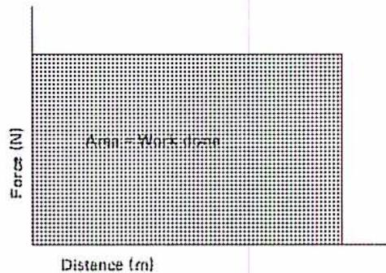
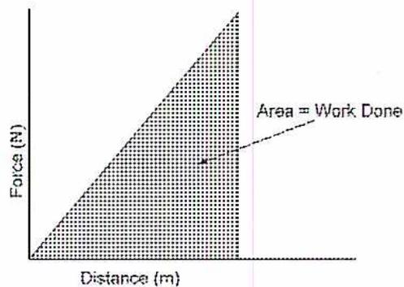

When you complete this learning material, you will be able to:
Apply the theory of applied mechanics to bodies at rest and in linear motion.
You will specifically be able to complete the following tasks:
Calculate the displacement, velocity, and acceleration of bodies moving in a straight line.
Mechanics is the study of the forces acting on objects and their resulting motion. It is widely applicable to problems such as the movement of vehicles and aircraft, the trajectory of a spacecraft, the motion of engine parts, such as a piston, and many other mechanical objects.
Kinematics is the study of motion of objects without taking into consideration forces that act on the object. If forces are considered, the study of motion is called dynamics which is covered in Module 2-1-11.
The simplest form of kinematics deals with particles. A particle is an object whose size can be ignored when dealing with its motion. A particle may be a small or a large object physically but for the purpose of studying its motion, its orientation and rotation can be ignored. For example, for air traffic control, the aircraft can be considered as a particle because its size is small compared to the distance travelled. When calculating the movement of a vehicle over a long trip, its size and orientation can also be ignored.
Objects move in three dimensions. For some problems, only one dimension is considered and the result is called linear (or sometimes rectilinear) motion. All quantities are scalar (magnitude only) and not vector (magnitude and direction) because only one dimension is involved.
The three quantities required to determine linear motion are displacement, velocity and acceleration.
The position of a particle at any point in time is defined by a coordinate system and therefore is a vector quantity. The difference in position is described as either displacement or distance.
Displacement is a vector quantity that is the difference in position between two points in space.
Distance is a scalar quantity that is the length of a path that a body travels.
When a car travels between two cities, the displacement (or the straight line distance) is usually less than the distance required to travel from one city to another.
In linear motion, distance is actually the relevant measure of position. The term displacement is used in this module so that it is consistent with standard notation.
In SI units, both distance and displacement are measured in metres (m) or a derived measure such as kilometre (km).
When position is described as a function of time, the movement of a particle is called either speed or velocity.
Speed is a scalar quantity that describes the distance moved in a given time interval.
Velocity is a vector quantity that describes the displacement of an object between two points in time.
In linear motion, speed is the relevant measure of position but the term velocity is used in this module so that it is consistent with standard notation.
In SI units, both speed and velocity are measured in metres/second (m/s) or a derived measure such as kilometre/hour (km/h).
If the distance travelled between two points and the time interval are known, the velocity will be the average velocity and is defined mathematically as:
$$ \text{Average velocity} = \frac{\text{Displacement}}{\text{Time interval}} \quad \text{or} $$ $$ v = \frac{s}{t} $$
If an object increases from an initial velocity \( v_i \) to a final velocity \( v_f \) , then the average velocity is:
$$ v_{\text{ave}} = \frac{u + v}{2} $$
A vehicle travels from Calgary to Edmonton, a distance of 300 km, in 3 hours and then continues to Grande Prairie, a distance of 240 km, arriving 2 hours later. What is the velocity for each portion of the trip and the average velocity for the whole trip?
For the Calgary to Edmonton portion:
$$ \begin{aligned} v &= \frac{s}{t} \\ v &= \frac{300}{3} \\ v &= 100 \text{ km/h (Ans.)} \end{aligned} $$
For the Edmonton to Grande Prairie portion:
$$ \begin{aligned} v &= \frac{s}{t} \\ v &= \frac{240}{2} \\ &= 120 \text{ km/h (Ans.)} \end{aligned} $$
The average velocity is:
$$ \begin{aligned} v_{ave} &= \frac{u + v}{2} \\ v_{ave} &= \frac{100 + 120}{2} \\ &= 110 \text{ km/h (Ans.)} \end{aligned} $$
Acceleration is a vector quantity that describes the change of velocity with time.
In SI units, acceleration is measured in metres/second 2 (m/s 2 ).
If the change in velocity is uniform over a time period, then the acceleration or deceleration is constant.
$$ \begin{aligned} \text{Average acceleration} &= \frac{\text{Final velocity} - \text{Initial velocity}}{\text{Time interval}} \text{ or} \\ a &= \frac{v - u}{t} \end{aligned} $$
For constant acceleration \( a = k \) , the following relationships between distance, velocity and acceleration can be established.
The final velocity is calculated from the initial velocity, acceleration, and time by reorganizing the formula:
$$ a = \frac{v - u}{t} $$
$$ v = u + at $$
The distance is calculated from the initial velocity, final velocity, and time by substituting formula \( v = \frac{s}{t} \) into the left hand side of formula \( v_{ave} = \frac{u + v}{2} \)
$$ V_{ave} = \frac{u + v}{2} $$
$$ \frac{s}{t} = \frac{u + v}{2} $$
$$ s = \left( \frac{u + v}{2} \right) \times t $$
The distance can also be calculated from the initial velocity, acceleration, and time by substituting formula \( v = u + at \) into formula \( s = \left( \frac{u + v}{2} \right) \times t \) :
$$ s = \left( \frac{u + u + at}{2} \right) t $$
$$ s = ut + \frac{at^2}{2} $$
The final velocity is calculated from the initial velocity, acceleration, and distance by reorganizing formula:
$$ s = \left( \frac{u + v}{2} \right) \times t $$
$$ t = \left( \frac{2s}{u + v} \right) $$
and then substituting this into formula \( v = u + at \) :
$$ v_f = u + a \left( \frac{2s}{u + v} \right) $$
so that a reorganization of the terms yields:
$$ \begin{aligned}(v-u) &= \left( \frac{2as}{u+v} \right) \\(v-u)(u+v) &= 2as \\v^2 - u^2 &= 2as\end{aligned} $$
and the final formula is:
$$ v^2 = u^2 + 2as $$
A body moving at 20 m/s accelerates uniformly at \( 4 \text{ m/s}^2 \) for 5 seconds. What is the final velocity and the total distance traveled?
The final velocity is calculated by using the following formula:
$$ \begin{aligned}v &= u + at \\v &= 20 + (4 \times 5) \\v &= \mathbf{40 \text{ m/s}} \text{ (Ans.)}\end{aligned} $$
The distance is then determined:
$$ \begin{aligned}s &= \left( \frac{u+v}{2} \right) t \\s &= \left( \frac{20+40}{2} \right) 5 \\s &= \mathbf{150 \text{ m}} \text{ (Ans.)}\end{aligned} $$
A vehicle reduces its velocity from 80 km/h to 20 km/h in 10 seconds. What is the deceleration and the total distance traveled?
Since the answer is to be in \( \text{m/s}^2 \) , convert the velocities from \( \text{km/h} \) to \( \text{m/s} \) which is done by the following conversion:
$$ \begin{aligned} u &= \frac{80 \text{ km} \times 1000 \text{ m/km}}{\text{h} \times 60 \text{ min/h} \times 60 \text{ sec/min}} \\ &= 22.2 \text{ m/s} \end{aligned} $$
$$ \begin{aligned} v &= \frac{20 \text{ km} \times 1000 \text{ m/km}}{\text{h} \times 60 \text{ min/h} \times 60 \text{ sec/min}} \\ &= 5.56 \text{ m/s} \end{aligned} $$
The deceleration (shown as a negative acceleration) is determined::
$$ \begin{aligned} a &= \frac{v - u}{t} \\ a &= \frac{5.56 - 22.2}{10} \\ &= -1.66 \text{ m/s}^2 \text{ (Ans.)} \end{aligned} $$
The distance traveled is then calculated:
$$ \begin{aligned} s &= ut + \frac{at^2}{2} \\ s &= 22.2 \times 10 + \frac{-1.66 \times 10^2}{2} \\ &= 139 \text{ m (Ans.)} \end{aligned} $$
Describe the relationship between mass, force, acceleration and weight.
Mass , the amount of matter in an object, is dependent on the volume and density of the substance making up its body. The unit of mass is the kilogram (kg).
In the SI system of units, mass is a fundamental quantity and is a measure of inertia or resistance to change in motion.
Newton described the relationship between force, mass, and acceleration in his Second Law. It states that
“An unbalanced force acting on a body produces an acceleration that is directly proportional to the force and inversely proportional to its mass.”
The formula is therefore:
$$ \text{Acceleration} = \frac{\text{Force}}{\text{Mass}} $$
or:
$$ \text{Force} = \text{mass} \times \text{acceleration} \quad \text{or} $$
$$ F = ma $$
Force is a derived quantity that is measured in \( \text{kg m/s}^2 \) or N (Newtons).
A mass of 100 kg is accelerated at \( 2 \text{ m/s}^2 \) . What is the force required to accomplish this?
The accelerating force is determined:
$$ \begin{aligned} F &= ma \\ &= 100 \times 2 \\ &= 200 \text{ kg m/s}^2 \\ &= \mathbf{200 \text{ N}} \text{ (Ans.)} \end{aligned} $$
Weight is the force of gravity acting on a mass. Objects on the earth are subjected to the force of gravity. Weight varies with location and therefore a person's weight on the moon is different from their weight on earth.
The formula for Newton's Second Law Error! Reference source not found. can be rewritten in terms of weight by substituting acceleration due to gravity \( g \) for acceleration \( a \) so that force becomes weight. The formula then becomes:
$$ \begin{aligned} w &= mg \\ g &= 9.81 \text{ m/s}^2 \end{aligned} $$
Weight is measured in N (Newtons) or the same units as force.
What is the weight of a 1 kg mass on the earth's surface?
The weight is:
$$ \begin{aligned} w &= mg \\ &= 1 \text{ kg} \times 9.81 \text{ m/s}^2 \\ &= 9.81 \text{ kg m/s}^2 \\ &= \mathbf{9.81 \text{ N}} \text{ (Ans.)} \end{aligned} $$
If an object weighs 64 N on the earth's surface, what is its mass?
The mass is:
$$ \begin{aligned} m &= \frac{w}{g} \\ &= \frac{64}{9.81} \\ &= 6.52 \text{ kg (Ans.)} \end{aligned} $$
Explain “inertia” and “momentum.”
Inertia is a property of matter that causes resistance to a change in motion. Inertia is related to the mass of a body. As mass increases, a greater force is required to change the state of motion of the body or to cause it to accelerate.
Newton’s First Law is also called the law of inertia. It states that:
“A body at rest will remain at rest and a body in uniform motion along a straight line will continue unless it is acted upon by an external unbalanced force.”
Momentum is the product of the mass of a body and its velocity. Newton’s Second Law refers to momentum.
The linear momentum \( p \) (rho) is written as:
Momentum = mass \( \times \) velocity or
$$ p = mv $$
If the formula for acceleration \( a = \frac{v-u}{t} \) is substituted into formula \( F = ma \) , then force is stated in terms of a change of momentum.
Force = \( \frac{\text{Change in momentum}}{\text{Time}} \) or
$$ F = ma $$
$$ F = m \frac{v-u}{t} $$
$$ F = \frac{mv - mu}{t} $$
A mass of 2 kg moving at 10 m/s is brought to rest in 0.005 seconds. What force is required?
v = final velocity, 0 m/s
u = initial velocity, 10 m/s
$$ \begin{aligned} F &= \frac{mv - mu}{t} \\ F &= \frac{2 \times 0 - 2 \times 10}{0.005} \\ &= 4000 \text{ kg m/s}^2 \\ &= 4000 \text{ N (newtons) (Ans.)} \end{aligned} $$
Demonstrate graphically the relationship between work, force, and distance.
Work is done when a force moves an object over a certain distance. The formula for work is:
Work = Force \( \times \) distance or
$$ W = Fs $$
When applied to work, distance is a scalar quantity because the length of the path is proportional to the amount of work done. For example, if a body is moved in a complete circle, work is still done in proportion to the circumference of the circle even though the net displacement is zero. Therefore, work is also a scalar quantity.
It is important to note that distance as it applies to work is in the same direction as the applied force. As an example, if an object is raised using a ramp, the applied force is that of gravity which acts in a vertical direction. The relevant distance is the vertical distance and, assuming a frictionless ramp, the amount of work done is the same regardless of the length or incline of the ramp.
The unit of work is the Joule and one Joule is equal to one Nm (Newton-metre).
It is helpful to display formula \( W = Fs \) graphically if the force applied varies with distance. The total work done is determined by the area under the graph. The simplest case occurs when the force is constant for the entire distance, as shown in Fig. 1. Formula \( W = Fs \) is used to calculate the work done, which is equal to the area under the graph.

Figure 1
Work Done with a Constant Force
If there is a linear increase in the force, as shown in Fig. 2, the area is one half of that in Fig. 1 and the formula is:
$$ W = \frac{1}{2} Fs $$

Figure 2
Work Done with an Increasing Force
A mass of 50 kg is moved a distance of 10 m against a force of 100N. Calculate the amount of work done.
The work is calculated as:
$$ \begin{aligned}W &= Fs \\&= 100 \times 10 \\&= 1000 \text{ J} \\&= \mathbf{1 \text{ kJ}} \text{ (Ans.)}\end{aligned} $$
Note that the mass of the object is irrelevant in this case.
A force varying uniformly between 0 and 1000 N moves an object a distance of 20 m. How much work is done?
The work is calculated as
$$ \begin{aligned}W &= \frac{1}{2} Fs \\&= \frac{1}{2} \times 1000 \times 20 \\&= 10\,000 \text{ J} \\&= \mathbf{10 \text{ kJ}} \text{ (Ans.)}\end{aligned} $$
A mass of 50 kg is moved up a frictionless ramp of \( 45^\circ \) which is 10 m long. How much work is done?
First calculate the force required to overcome gravity:
$$ \begin{aligned}F &= ma \\&= 50 \times 9.81 \\&= 490.5 \text{ N}\end{aligned} $$
The vertical distance is determined because of the force of gravity. Using basic geometry, the vertical distance is calculated using Pythagoras' Theorem, \( a^2 + b^2 = c^2 \) .
For a \( 45^\circ \) angle, the two sides are equal and with \( c = 10 \) , the vertical distance \( a \) is:
$$ \begin{aligned} a^2 &= \frac{c^2}{2} \\ a^2 &= \frac{10^2}{2} \\ a &= \sqrt{\frac{100}{2}} \\ a &= 7.07 \text{ m} \end{aligned} $$
The work done is calculated as:
$$ \begin{aligned} W &= Fs \\ &= 490.5 \times 7.07 \\ &= 3468 \text{ J} \\ &= \mathbf{3.468 \text{ kJ}} \text{ (Ans.)} \end{aligned} $$
Define and calculate the kinetic energy of moving objects.
Energy is the ability to do work. There are different types of energy such as electrical, chemical and heat but the type of energy discussed here is mechanical energy. One type of mechanical energy is kinetic, which is energy due to motion.
Kinetic energy is the ability to do work due to the motion of a body. It can be derived from the formula for work \( W = Fs \) and substituting formula \( F = ma \) as follows:
$$ W = Fs $$
$$ W = mas $$
Because acceleration can be expressed in terms of velocity, from formula \( a = \frac{v-u}{t} \) , the formula becomes:
$$ W = mas $$
$$ W = ms \frac{v-u}{t} $$
The distance can be replaced by formula \( s = \left(\frac{u+v}{2}\right) \times t \) :
$$ \begin{aligned} W &= ms \frac{v-u}{t} \\ &= m \left(\frac{v+u}{2}\right) t \frac{v-u}{t} \\ &= \frac{1}{2} mv^2 - \frac{1}{2} mu^2 \\ &= \frac{1}{2} m(v^2 - u^2) \end{aligned} $$
Work done by a moving body can also be determined by calculating the change in kinetic energy from the initial to the final position.
The kinetic energy \( E_K \) is calculated using the formula:
$$ E_K (J) = \frac{1}{2} m v^2 $$
The units of measure are the same as those for work, Joules.
What is the kinetic energy of a vehicle of mass 1500 kg travelling at 50 km/h?
The first step is to convert the speed to m/s:
$$ \begin{aligned} v &= \frac{50 \text{ km} \times 1000 \text{ m/km}}{\text{h} \times 60 \text{ min/h} \times 60 \text{ sec/min}} \\ &= 13.89 \text{ m/s} \end{aligned} $$
The kinetic energy is then calculated from formula \( E_K (J) = \frac{1}{2} m v^2 \) as:
$$ \begin{aligned} E_K &= \frac{1}{2} m v^2 \\ &= \frac{1}{2} \times 1500 \times 13.89^2 \\ &= 144\,699 \text{ J} \\ &= 144.7 \text{ kJ (Ans.)} \end{aligned} $$
Define and calculate the potential energy of stationary objects.
Another type of mechanical energy is potential energy. Potential energy is the ability to do work as a result of the position or state of a body.
Examples of potential energy are:
To calculate potential energy, use the same formula \( W = Fs \) as that for work. The potential energy is the amount of work that the object is capable of performing due to its current state.
The formula for potential energy is therefore:
$$ E_p = Fs $$
A standard example is the potential energy due to the elevation of an object. The potential energy of the object is equal to its distance above a reference point, multiplied by the force of gravity.
What is the potential energy of an object with a mass of 100 kg that is 10 m above the ground?
It is first necessary to calculate the force of gravity. Using formula \( F = ma \) :
$$ \begin{aligned} F &= ma \\ &= 100 \times 9.81 \\ &= 981 \text{ N} \end{aligned} $$
The potential energy is calculated from formula \( E_p = Fs \) as
$$ \begin{aligned} E_p &= Fs \\ &= 981 \times 10 \\ &= 9810 \text{ J} \\ &= \mathbf{9.81 \text{ kJ}} \text{ (Ans.)} \end{aligned} $$
Explain the Law of Conservation of Energy.
The Law of Conservation of Energy states that for any process the total energy before and after the process is the same. Another way of saying this is that energy cannot be created or destroyed. It can only be converted from one form to another.
A falling mass is again a good example. Before the object drops from a height, its potential energy is dependent upon its height and the force of gravity. At this point it does not have any kinetic energy. As it falls, the potential energy decreases while the kinetic energy increases by the same amount.
In this situation the formula for the Law of Conservation of Energy can be stated as:
Loss of Potential Energy = Gain in Kinetic Energy
$$ Fs = \frac{1}{2}mv^2 $$
When the object hits the ground, this kinetic energy is converted into another form. The nature of the remaining energy is dependant on a number of variable factors, including the nature of the material that the object strikes.
What is the velocity of an object with a mass of 100 kg that is allowed to fall from rest from a height of 10 m above the ground?
Using formula \( F = ma \) to determine the force and substituting in formula \( Fs = \frac{1}{2}mv^2 \) , the velocity is determined as:
$$ \begin{aligned}Fs &= \frac{1}{2}mv^2 \\ma_s &= \frac{1}{2}mv^2 \\100 \times 9.81 \times 10 &= \frac{1}{2} \times 100 \times v^2 \\v^2 &= 196.2 \\v &= 14.01 \text{ m/s (Ans.)}\end{aligned} $$
Define and calculate indicated power.
Power is the rate at which work is done. The formula for power is:
$$ \text{Power} = \frac{\text{Work}}{\text{time}} \text{ or} $$
$$ P = \frac{W}{t} $$
Since the power produced is dependent on time as well as work done, two machines may do the same amount of work over different periods of time and consequently have different power outputs. For this reason, most machines are rated according to their power output and not the amount of work that they can perform.
The unit of measure for power is J/s (Joules/second) which is called a Watt or:
$$ 1 \text{ J/s} = 1 \text{ Watt} $$
Watt are small units, therefore, power is often measured as follows:
$$ 1 \text{ kilowatt (kW)} = 10^3 \text{ Watts} $$
$$ 1 \text{ megawatt (MW)} = 10^6 \text{ Watts} $$
$$ 1 \text{ gigawatt (GW)} = 10^9 \text{ Watts} $$
A constant force of 1000 N moves an object a distance of 1 km in 50 seconds. What is the power required to do this?
The work done is determined from formula \( W = Fs \) :
$$ \begin{aligned}W &= Fs \\&= 1000 \text{ N} \times 1000 \text{ m} \\&= 1 \, 000 \, 000 \text{ J}\end{aligned} $$
The power is calculated from formula \( P = \frac{W}{t} \) :
$$ \begin{aligned}P &= \frac{W}{t} \\&= \frac{1 \, 000 \, 000 \text{ J}}{50 \text{ s}} \\&= 20 \, 000 \text{ Watts} \\&= 20 \text{ kW (Ans.)}\end{aligned} $$
Indicated power is produced in a reciprocating engine as a result of pressure acting on a piston that moves linearly in a cylinder. The formulas for work and power can be used to determine the amount of power produced by the engine.
The pressure times the area of the piston determines the force applied and the stroke of the piston is the distance over which work is done. The pressure in this calculation is called the mean effective pressure. It is the net pressure on the piston because there may be an opposing back pressure on the other side of the piston that has to be subtracted from the pressure in the cylinder. The mean effective pressure is also an average pressure since the pressure may vary with the stroke as the fluid expands.
The force on the piston is calculated by:
$$ \begin{aligned}\text{Force} &= \text{Mean effective pressure} \times \text{area or} \\F &= p \times A\end{aligned} $$
The work done per stroke, where \( L \) the length of the stroke is, is:
$$ \begin{aligned}\text{Work} &= \text{Force} \times \text{distance} \\W &= pAL\end{aligned} $$
The indicated power \( P_i \) is calculated using the number of power strokes per second \( N \) so that the final formula is:
$$ P_i = pLAN $$
The number of power strokes per revolution is added to the calculation. For a typical internal combustion engine, the possibilities are:
For a steam engine:
Note that this calculation can also be used in reciprocating compressor calculations to determine the amount of power needed to drive the compressor.
A four cylinder two stroke diesel engine runs at 150 rpm and has a mean effective pressure of 1200 kPa. The diameter of each cylinder is 750 mm and the stroke is 1200 mm. What is the indicated power of the engine?
The area of each piston is:
$$ \begin{aligned} A &= \pi r^2 \\ &= 3.1416 \times \left( \frac{0.75}{2} \right)^2 \\ &= 0.442 \text{ m}^2 \end{aligned} $$
With a two stroke engine, there is one power stroke per revolution so the number of strokes per second is:
$$ \begin{aligned} N &= \frac{1 \text{ power stroke/rev} \times 150 \text{ rpm}}{60 \text{ sec/min}} \\ &= 2.5 \text{ power strokes per second} \end{aligned} $$
Because a Pa (Pascal) is equivalent to a N/m 2 (Newton/metre squared), the indicated power produced by each cylinder is calculated using formula \( P_i = pLAN \) :
$$ \begin{aligned} P_i &= pLAN \\ &= 1200 \times 1.2 \times 0.442 \times 2.5 \\ &= 1591.2 \text{ kW} \end{aligned} $$
The total power produced for all four cylinders is:
$$ \begin{aligned} \text{Total } P_i &= 4 \times 1591.2 \\ &= \mathbf{6364.8 \text{ kW}} \text{ (Ans.)} \end{aligned} $$
A1.8
A four cylinder 2 stroke diesel engine runs at 200 rpm and has a mean effective pressure of 1000 kPa. The stroke of each cylinder is 1200 mm. The total indicated power for the engine is 6000